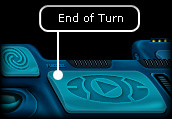

Ranger manual > Navigation
panel > End of turn (Space)
|
Ranger manual > Navigation
panel > End of turn (Space)
|
| End of turn (Space)  "End of turn" - is the uppermost button in the game. Press it to prompt yours and other spaceships to complete the orders given earlier ("flight", "land", "shoot ", etc.). At that, this can take one or several game days (turns) - depending on the nature of the command. For instance if a player has scheduled a multi-day flight, a single pressing of 'End od turn' will result in a flight lasting several game days, unless some game events or the player interfere the flight.In the space you an activate the 'End of turn' via a more convenient method: find a place, where you can move your spaceship to, and double-click it. |
 To interrupt
several days flight: To interrupt
several days flight:Press "End of Turn" or Space repeatedly. If you are in space, your ship will not stop immediately, but at the end of the current day. |
| In order to make a multi-day flight
with a stop at the end of each day:
Hold down the key Shift and press 'End of turn' button (Space). Note. Being on a planet, press 'End of turn' button only, if you expect the change of prices in the Trading center or a governmental quest. |